Portugal & Spain · 13–24 February 2027
리스본에 내려 벨렝부터,
바르셀로나에서 비행기로
리스본에 내려 제로니무스 수도원과 에그타르트만 먹고 그날 저녁 포르투로 넘어가요. 도루강의 노을을 보고, 세비야에서 알카사르를 걷고, 그라나다에서 알함브라를 오르고, 바르셀로나에서 가우디를 만나고 돌아와요. 리스본은 숙박 없이 하루만 스쳐가요.
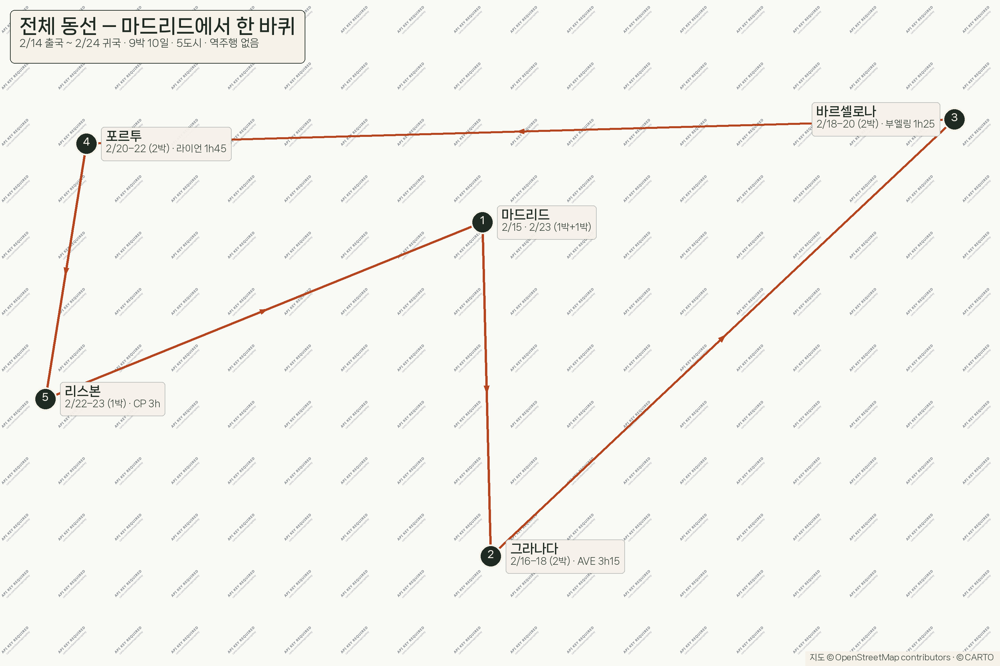
- 총액 · 2인
- 6,812,970원 (1인 3,406,485)
- 현지 지출
- 4,028,970항공 제외
- 항공 · 2인
- 2,384,000가는편 + 오는편
- 일수
- 9박 10일5도시 · 이동 6회
- 환율
- 1,551원 / € (3개월 평균)
동선 — 리스본에서 북상, 다시 남하
리스본(서) → 포르투(북) → 세비야(남) → 그라나다(동) → 바르셀로나(북동). 비행 3 · 버스 2(도시간). 리스본은 2/14 하루만 쓰고 떠나요.
일차 요약
행을 누르면 그날의 시각표와 비용 원장으로 넘어가요. 항공은 오픈조라 가는편은 D1 · 2/13(토), 오는편은 D11에 넣었어요.
| 일 | 도시 | 날짜 | 그날 합계 |
|---|---|---|---|
| D1 · 2/13(토) | 인천 → 리스본 ICN 23:05 출발 · 암스테르담 경유 | 2/13 (토) | 2,469,000 |
| D2 · 2/14(일) | 리스본 → 포르투 LIS 10:30 도착 · 벨렝 · 21:05 포르투 | 2/14 (일) | 464,225 |
| D3 · 2/15(월) | 포르투 — 위에서 아래로 렐루 서점 · 모루 정원 일몰 · 유람선 | 2/15 (월) | 337,757 |
| D4 · 2/16(화) | 포르투 → 세비야 라이언 2h15 → 세비야 · 대성당 | 2/16 (화) | 385,563 |
| D5 · 2/17(수) | 세비야 — 스냅 촬영 & 알카사르 레알 알카사르 · 스페인 광장 · 트리아나 | 2/17 (수) | 525,305 |
| D6 · 2/18(목) | 세비야 → 그라나다 알사 버스 3h → 그라나다 · 알바이신 | 2/18 (목) | 328,910 |
| D7 · 2/19(금) | 그라나다 — 알함브라 알함브라 나사리 궁전 · 헤네랄리페 | 2/19 (금) | 334,910 |
| D8 · 2/20(토) | 그라나다 → 바르셀로나 부엘링 1h25 → 바르셀로나 · 람블라스 | 2/20 (토) | 565,530 |
| D9 · 2/21(일) | 바르셀로나 — 가우디 & 쇼핑 사그라다 파밀리아 · 구엘 공원 · 명품 | 2/21 (일) | 447,385 |
| D10 | 바르셀로나 — 구시가지 & 마무리 고딕 지구 · 피카소 · 쇼핑 마무리 | 2/22 (월) | 404,385 |
| D11 | 바르셀로나 → 인천 BCN 17:25 출국 → 2/24 16:55 인천 | 2/23 (화) | 150,000 |
날짜별 지도 — 크게 보기
각 날짜의 동선을 지도 위에 번호로 얹었어요. 누르면 그날의 시각표로 넘어가요.
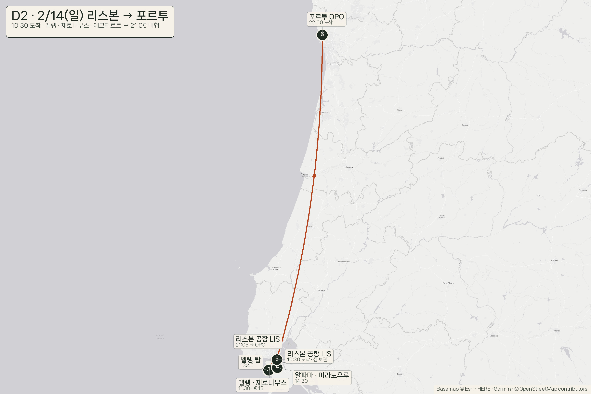
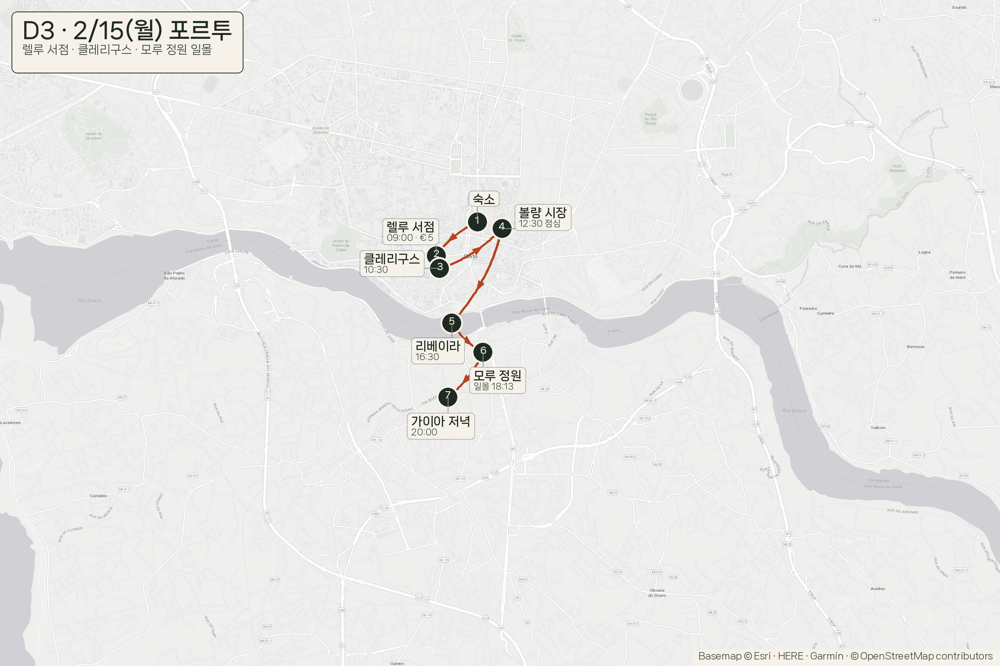
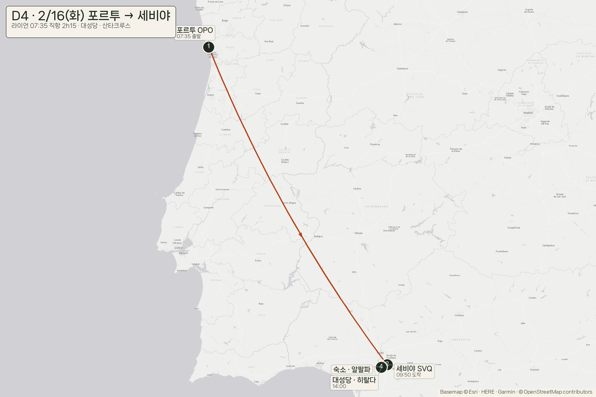
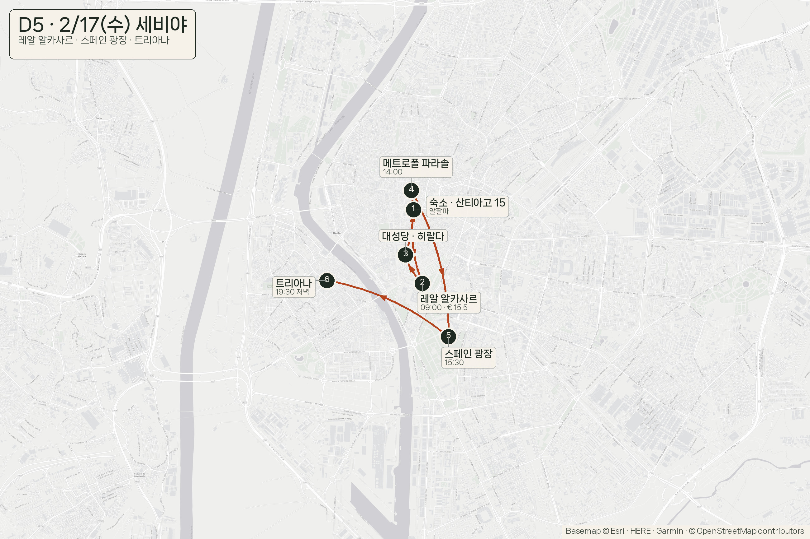
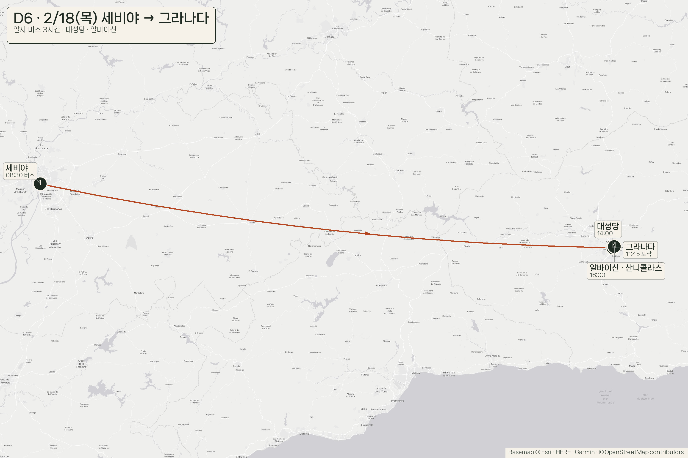
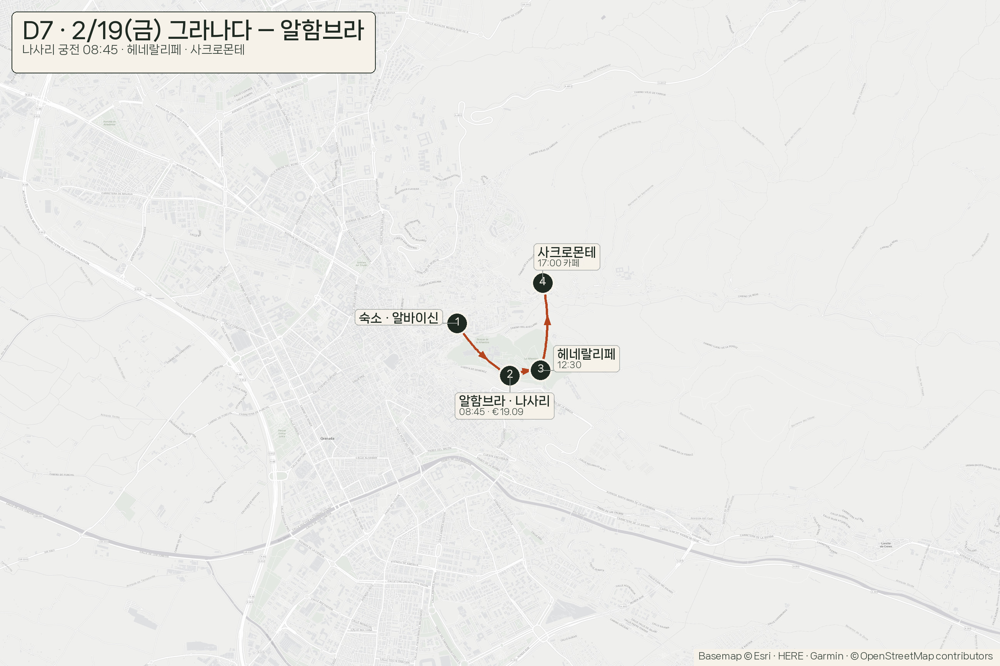
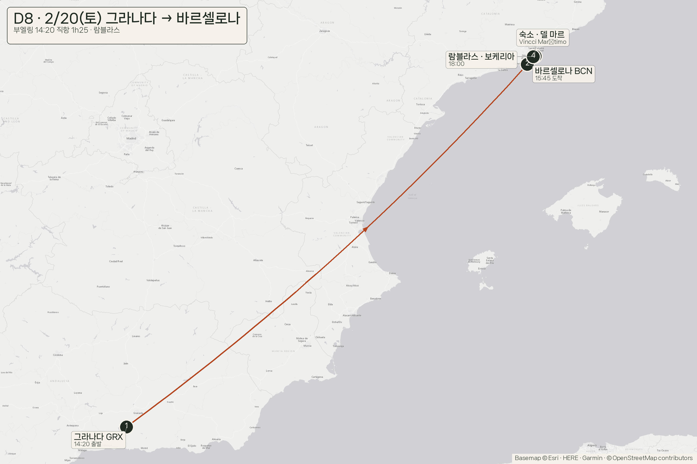
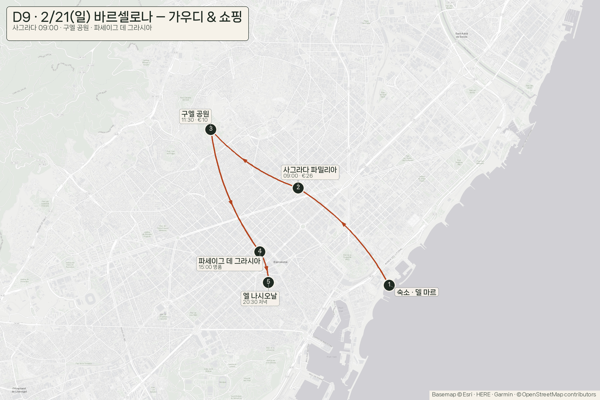
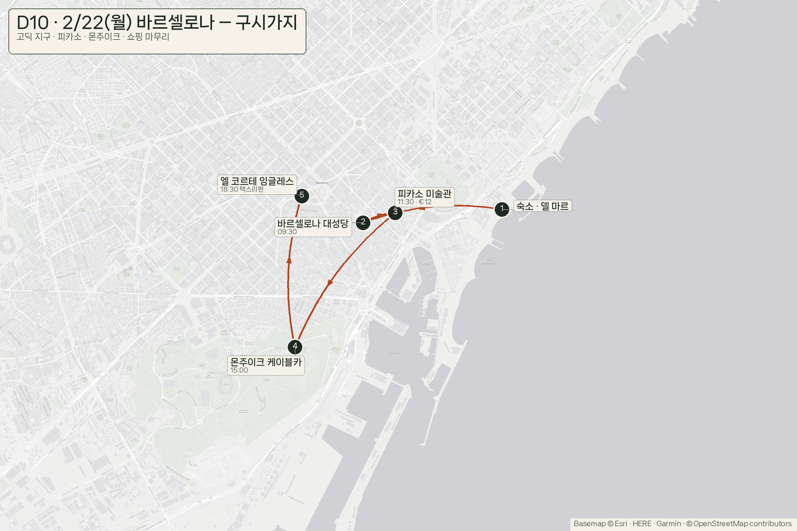
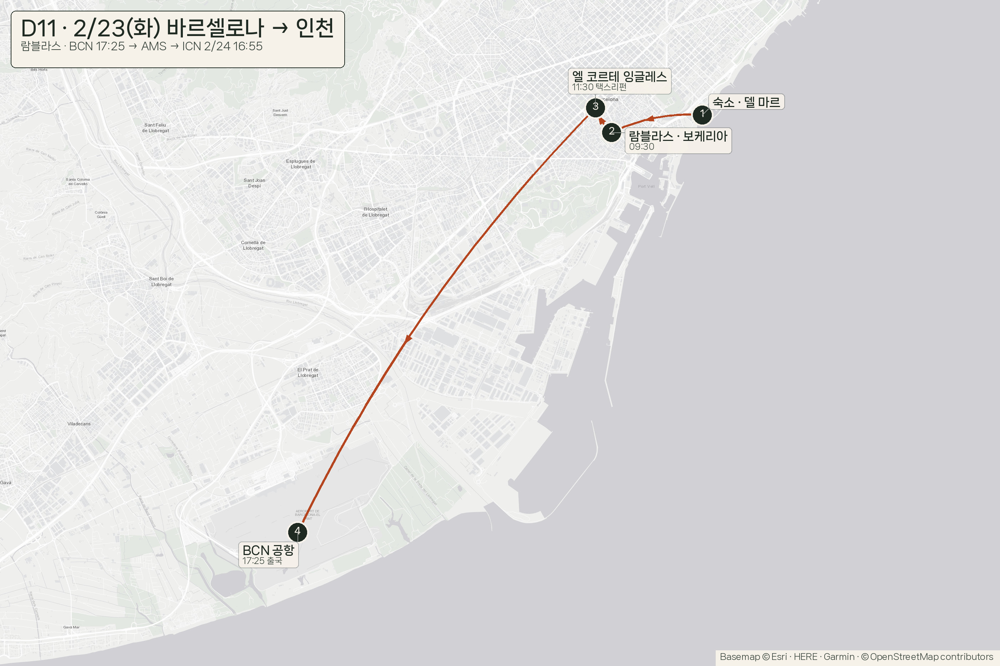
리스본은 하루, 나머지는 이틀씩
- D2 (2/14) 2/14 — 리스본 — 제로니무스 · 에그타르트 · 벨렝 탑 → 21:05 포르투
- D2 · 2/14(일)–3 (2/14–15) 2/14–15 — 포르투 — 리베이라 · 포트와인 셀러 · 렐루 서점 · 모루 정원
- D4 · 2/16(화)–5 (2/16–17) 2/16–17 — 세비야 — 대성당 · 레알 알카사르 · 스페인 광장 · 트리아나
- D6 · 2/18(목)–7 (2/18–19) 2/18–19 — 그라나다 — 알함브라 나사리 궁전 · 알바이신 · 사크로몬테
- D8 · 2/20(토)–11 (2/20–23) 2/20–23 — 바르셀로나 — 사그라다 · 구엘 · 명품 · 택스리펀 · 출국
리스본 0박 · 포르투 2박 · 세비야 2박 · 그라나다 2박 · 바르셀로나 3박이에요. 리스본을 빼서 바르셀로나에 하루를 더 줬어요.
주의 두 가지
- 숙소는 11/14 재조회 값이에요 — 9박 합계 875,099원. 에어비앤비·아고다는 이번 조회에서 차단돼 구글 호텔만 반영했어요.
- 리스본은 숙박 0박이에요 — 10:30 도착, 제로니무스·에그타르트·벨렝탑, 21:05 포르투행. 짐은 공항에 맡기고 가볍게 움직여요.
- 알함브라 나사리 궁전은 2/19 오전(금요일)으로 잡았어요 — 티켓 오픈 즉시 예약이 안전해요.
- 오픈조가 이번엔 제일 싸요 — 2인 2,384,000원. 마드리드 왕복(228만)과 같은 값대인데, 마드리드를 아예 안 들러요.
총액 구성
| 항목 | 2인 |
|---|---|
| 항공 (오픈조, 11/14 실조회) | 2,384,000 |
| 숙박 9박 | 875,099 |
| 식비 10일 (실제 메뉴) | 1,655,000 |
| 입장료·시내교통 | 951,000 |
| 도시 간 이동 (기차·항공·버스) | 547,871 |
| 여유·기념품 | 400,000 |
| 합계 — 2인 | 6,812,970 |
1,000만원 상한 대비 여유는 3,187,030원이에요. 환율이 100원 움직이면 2인 예산은 약 66만원 달라져요.
발권 시점 — 지금이 적기예요
2/13 ICN→LIS + 2/23 BCN→ICN 오픈조가 지금 2인 2,384,000원이에요(KLM, 암스테르담 경유). 출발 6~8주 전부터 값이 오르는 구간이라, 지금 결제가 가장 편해요.
| 상황 | 가격 |
|---|---|
| 지금 (2026-11-14 실조회) | 2,384,000 |
| 특가 일부 소진 | 265~280만 |
| 성수 진입 | 300만 |
진짜 변수는 가격이 아니라 저가 좌석(fare bucket) 소진이에요. 2인 240만원 이하면 바로 결제하시고, 숙소는 지금 무료취소로 먼저 잡아 두세요.
명품 포함 총액
주얼리 값은 공식 사이트(한국·일본·스페인)를 직접 조회한 값이에요(2026-10-18). 택스리펀 후 실구매 기준이에요. 자세한 건 귀고리 10종 비교 · 택스리펀에서 보세요.
| 후보 | 쇼핑액 | 여행+쇼핑 | 1,000만 | 1,200만 |
|---|---|---|---|---|
| 없음 | 0 | 6,812,970 | 가능 | 가능 |
| 까르띠에 다무르 펜던트 SM (€1,520) | 2,103,938 | 8,916,908 | 가능 | 가능 |
| 까르띠에 트리니티 이어링 플레인 (€2,040) | 2,823,707 | 9,636,677 | 가능 | 가능 |
| 불가리 세르펜티 바이퍼 링 (€2,770) | 3,834,151 | 10,647,121 | — | 가능 |
| 반클리프 알함브라 펜던트 오닉스 (€3,100) | 4,290,927 | 11,103,897 | — | 가능 |
| 까르띠에 트리니티 이어링 클래식 (€3,800) | 5,259,846 | 12,072,816 | — | 초과 |
트리니티 이어링 클래식(€3,800)까지 넣으면 12,072,816원이라 절대 상한 1,200만원을 넘어요. 1,000만원 안에서 주얼리를 넣으시려면 트리니티 이어링 플레인(€2,040)까지가 한계예요.
항공 조회 링크
아래 링크는 우리 날짜 · 2인으로 바로 열려요(구글 항공권). 요금은 조회 시점에 따라 움직이니 결제 전에 한 번 더 눌러 확인해 주세요.
날짜 지정 검색은 스크립트·헤드리스로 열면 캡차에 막혀서, 이 링크로 직접 보시는 게 가장 정확해요. 「최저」는 경유 25~31시간, 「추천」은 21시간 55분 / 16시간 10분이에요 — 계획값은 「추천」으로 잡았어요.